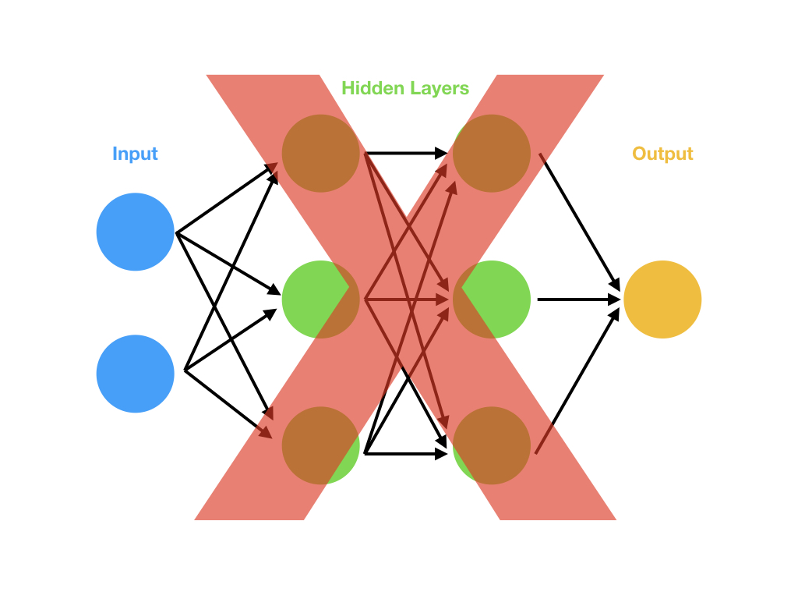

Dear aspiring data scientists, just skip deep learning (for now)
Jan 15, 2018 - Opinion, Theory"When are we going to get into deep learning, I can't wait until we do all that COOL stuff."
- Literally all of my students ever.
- Literally all of my students ever.
Part of my job at Metis is to give reliable recommendations to my students on what technologies they should focus on in the data science world. At the end of the day, our goal (collectively) is to make sure those students are employable, so I always have my ear to the ground on what skills are currently hot in the employer world. After going through several cohorts, and listening to as much employer feedback as I can, I can say pretty confidently — the verdict on the deep learning rage is still out. I'd argue most industrial data scientists don't need the deep learning skill set at all. Now, let me start by saying: deep learning does some unbelievably awesome stuff. I do all sorts of little projects playing around with deep learning, just because I find it fascinating and promising.
Computer vision? Awesome.
LSTM's to generate content/predict time series? Awesome.
Image style transfer? Awesome.
Generative Adversarial Networks? Just so damn cool.
Using some weird deep net to solve some hyper-complex problem. OH LAWD IT'S SO MAGNIFICENT
If this is so cool, why do I say you should skip it then? It comes down to what's actually being used in industry. At the end of the day, most businesses aren't using deep learning yet. So let's take a look into some of the reasons deep learning isn't seeing a fast adoption in the world of business.

Businesses are still catching up to the data explosion...
... so most of the problems we're solving don't actually need a deep learning level of sophistication. In data science you're always shooting for the simplest model that works. Adding unnecessary complexity is just giving us more knobs and levers to break later. Linear and logistic regression techniques are extremely underrated, and I say that knowing that many people hold them in super high esteem. I'd always hire a data scientist that is intimately familiar with traditional machine learning methods (like regression) over someone who has a portfolio of eye-catching deep learning projects, but isn't as great at working with the data. Knowing how and why things work is much more important to businesses than showing off that you can use TensorFlow or Keras to do Convolutional Neural Nets. Even employers that want deep learning specialists are going to want someone with a DEEP knowledge of statistical learning, not just some projects with neural nets.You have to tune everything just right...
...and there's no handbook for tuning. Did you set a learning rate of 0.001? Guess what, it doesn't converge. Did you turn momentum down to the number you saw in that paper on training this type of network? Guess what, your data is slightly different and that momentum value means you get stuck in local minima. Did you choose a tanh activation function? For this problem, that shape isn't aggressive enough in mapping the data. Did you not use at least 25% dropout? Then there's no chance your model can ever generalize, given your specific data.When the models do converge well, they are super powerful. However, attacking a super complex problem with a super complex answer necessarily leads to heartache and complexity issues. There is a definite artform to deep learning. Recognizing behavior patterns and adjusting your models for them is extremely difficult. It's not something you really should take on until understand other models at a deep-intuition level.
There are just so many weights to adjust
Let's say you've got a problem you want to solve. You look at the data and think to yourself, "alright, this is a somewhat complex problem, let's use a few layers in a neural net." You run to Keras and start building up a model. It's a pretty complex problem with 10 inputs. So you think, let's do a layer of 20 nodes, then a layer of 10 nodes, then output to my 4 different possible classes. Nothing too crazy in terms of neural net architecture, it's honestly pretty vanilla. Just some dense layers to train with some supervised data. Awesome, let's run over to Keras and put that in:
model = Sequential()
model.add(Dense(20, input_dim=10, activation='relu'))
model.add(Dense(10, activation='relu'))
model.add(Dense(4, activation='softmax'))
print(model.summary())
model.add(Dense(20, input_dim=10, activation='relu'))
model.add(Dense(10, activation='relu'))
model.add(Dense(4, activation='softmax'))
print(model.summary())
You take a look at the summary and realize: I HAVE TO TRAIN 474 TOTAL PARAMETERS. That's a lot of training to do. If you want to be able to train 474 parameters, you're doing to need a ton of data. If you were going to try to attack this problem with logistic regression, you'd need 11 parameters. You can get by with a lot less data when you're training 98% fewer parameters. For most businesses, they either don't have the data necessary to train a big neural net or don't have the time and resources to dedicate to training a huge network well.
Deep Learning is inherently slow
We just mentioned that training is going to be a huge effort. Lots of parameters + Lots of data = Lots of CPU time. You can optimize things by using GPU's, getting into 2nd and 3rd order differential approximations, or by using clever data segmentation techniques and parallelization of various parts of the process. But at the end of the day, you've still got a lot of work to do. Beyond that though, predictions with deep learning are slow as well. With deep learning, the way you make your prediction is to multiply every weight by some input value. If there are 474 weights, you've got to do AT LEAST 474 computations. You'll also have to do a bunch of mapping function calls with your activation functions. Most likely, that number of computations will be significantly higher (especially if you add in specialized layers for convolutions). So, just for your prediction, you're going to need to do 1000's of computations. Going back to our Logistic Regression, we'd need to do 10 multiplications, then sum together 11 numbers, then do a mapping to sigmoid space. That's lightning fast, comparitively.So, what's the problem with that? For many businesses, time is a major issue. If your company needs to approve or disapprove someone for a loan from a phone app, you only have milliseconds to make a decision. Having a super deep model that needs seconds (or more) to predict is unacceptable.
Deep Learning is a "black box"
Let me start this section by saying, deep learning is not a black box. It's literally just the chain rule from Calculus class. That said, in the business world if they don't know exactly how each weight is being adjusted and by how much, it is considered a black box. If it's a black box, it's easy to not trust it and discount that methodology altogether. As data science becomes more and more common, people may come around and start to trust the outputs, but in the current climate there's still much doubt. On top of that, any industries that are highly regulated (think loans, law, food quality, etc) are required to use easily interpretable models. Deep learning is not easily interpretable, even if you know what's happening under the hood. You can't point to a specific part of the net and say, "ahh, that's the section that is unfairly targeting minorities in our loan approval process, so let me take that out." At the end of the day, if an inspector needs to be able to interpret your model, you won't be allowed to use deep learning.So, what should I do then?
Deep learning is still a young (if extremely promising and powerful) technique that's capable of extremely impressive feats. However, the world of business isn't ready for it as of January 2018. Deep learning is still the domain of academics and start-ups. On top of that, to actually understand and use deep learning at a level beyond novice requires a great deal of time and effort. Instead, as you begin your journey into data modeling, you shouldn't waste your time on the pursuit of deep learning; as that skill isn't going to be the one that gets you a job for 90%+ of employers. Focus on the more "traditional" modeling methods like regression, tree-based models, and neighborhood searches. Take the time to learn about real-world problems like fraud detection, recommendation engines, or customer segmentation. Become excellent at using data to solve real-world problems (there are tons of great Kaggle datasets). Spend the time to develop excellent coding habits, reusable pipelines, and code modules. Learn to write unit tests.This is the exact feedback we hear from the employers we partner with at Metis, "data scientists are all worrying about deep learning, but our company doesn't do any deep learning. We'd rather see data scientists that are good with regression and SQL." It's a common refrain, as most companies just aren't on the cutting-est edge, yet. If they aren't hiring for deep learning, and you've spent all your time learning deep learning, you just aren't going to have the skill set that's currently in play.
However, once you do have the skill set that matters, I highly recommend diving into the deep learning craze, even if it's just casually. There's a lot of REALLY cool stuff happening there. It's just not the best use of your time if you're trying to learn how to do data science.